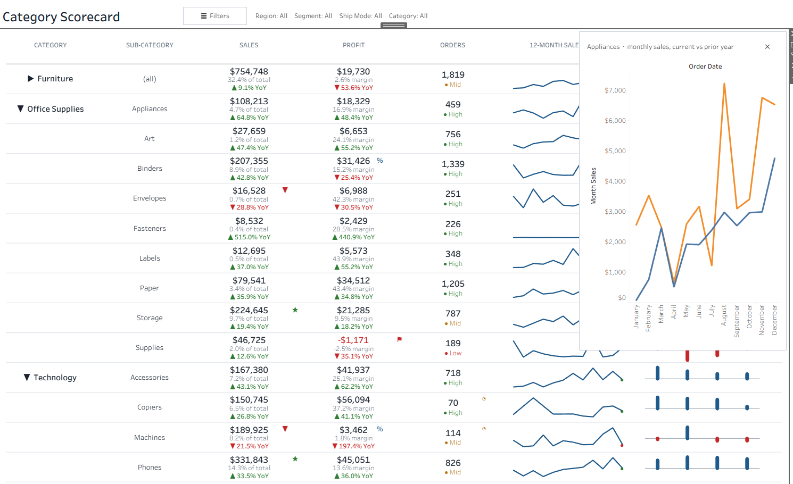

What map layers are
Map layers (Tableau 2020.4 and later) let one worksheet hold several stacked sets of marks, each with its own Marks card. Think of clear plastic sheets laid over each other: each sheet draws one thing, and together they make one picture.
On a real map, one layer might draw states, another stores and a third labels. Each layer can have its own mark type (text, circle, shape, line), its own colour and size, its own tooltip, and its own on/off switch for selection.
The trick: switch the map background off, and the layers become a blank canvas. You decide exactly where each mark sits by giving it a coordinate, so you can place several values inside one table cell.
Why this works for tables
Every number is its own layer, and you choose where it sits: longitude picks the column, latitude picks the line inside the cell. Stack two or three layers at the same longitude and you get several values in one column.
Repeat the canvas once per row, either by putting a dimension such as Sub-Category on Rows or by giving each row its own latitude, and you have a table.
The four building blocks
You only need four things. Everything else is formatting.
| Building block | What it does | Example |
|---|---|---|
MAKEPOINT(lat, lon) | Creates a fixed point on the canvas. Latitude comes first and sets the line (up/down); longitude sets the column (left/right). | MAKEPOINT(0.3, 0) = top line of column 1 |
| Add a Marks Layer | Dragging a spatial field onto an existing map shows an Add a Marks Layer drop zone. Each drop adds one layer with its own Marks card. | One layer per value you want to show |
| Mark type per layer | Each layer can be Text, Circle, Shape or Line. | Text for numbers, Line for sparklines |
| Background map off | Map › Background Maps › None turns the map into a blank canvas. | Removes streets, coastlines and the map grid |
Two more things keep the table tidy:
- Hold the zoom steady. Either fix the axis ranges on Latitude (generated) and Longitude (generated), or add an invisible frame layer such as
MAKELINE(MAKEPOINT(-1,-1), MAKEPOINT(1,3))at 0% opacity. Without one of these, Tableau zooms to fit the marks, and columns drift whenever a filter changes the data. - Keep coordinates near 0,0. Maps stretch shapes as you move away from the equator. Points within roughly ±10° latitude keep row spacing even.
Step by step: a simple custom table
Goal: Sub-Category down the rows and two columns. Sales shows the sales value in bold with its share of total in grey underneath. Profit shows profit in bold (red when negative) with the margin in grey underneath. About 30 minutes on Sample – Superstore.
A. Create the calculated fields
pt_Sales_Top = MAKEPOINT( 0.3, 0)
pt_Sales_Bottom = MAKEPOINT(-0.3, 0)
pt_Profit_Top = MAKEPOINT( 0.3, 2)
pt_Profit_Bottom = MAKEPOINT(-0.3, 2)
pt_Frame = MAKELINE(MAKEPOINT(-1, -1), MAKEPOINT(1, 3))
Sales % of Total = SUM([Sales]) / TOTAL(SUM([Sales]))
Profit Margin = SUM([Profit]) / SUM([Sales])B. Build the canvas
- Connect to Sample – Superstore (Orders sheet) and open a new worksheet.
- Double-click pt_Frame. Tableau draws a map, with Longitude (generated) on Columns and Latitude (generated) on Rows.
- On the pt_Frame Marks card, set opacity to 0%. The frame is invisible but still holds the zoom steady.
- Choose Map › Background Maps › None. Then Map › Map Options and untick every box (pan, zoom, search, toolbar).
C. Add one layer per value
- Drag pt_Sales_Top onto the view and drop it on Add a Marks Layer.
- On its Marks card: mark type Text, drag SUM(Sales) to Text, format as currency with no decimals, 11pt bold.
- Add pt_Sales_Bottom the same way. Text = Sales % of Total, format 0.0%, 9pt grey.
- Add pt_Profit_Top. Text = SUM(Profit), 11pt bold. Drag SUM(Profit) to Colour too and set a two-colour palette: red below zero, dark grey above.
- Add pt_Profit_Bottom. Text = Profit Margin, 0.0%, 9pt grey.
D. Turn it into rows
- Drag Sub-Category to Rows, to the left of Latitude (generated). Each sub-category becomes its own row, and every layer repeats in each row.
- Right-click the Latitude and Longitude headers and untick Show Header.
- Format › Borders: add a light row divider. Format › Lines: remove grid lines.
- Make sure Sales % of Total computes across the whole table: Edit Table Calculation › Table (down).
E. Headers, tooltips and clicks
- Add column titles ("Sales", "Profit") as text objects above the sheet on a dashboard, lined up with the columns.
- Each layer has its own tooltip. Put the full tooltip on the top layer of each column and set the bottom layer's tooltip to none.
- In the layer list, open the menu on each bottom layer and choose Disable Selection, so a click always selects the main value.
Check: the bold values should match a plain crosstab of SUM(Sales) and SUM(Profit) by Sub-Category.
Going further: the full scorecard
The dashboard at the top of this page uses the same idea with about 40 layers on one sheet. Instead of putting Sub-Category on Rows, each row gets its own latitude (9.6 − 1.2 × row index), which makes it possible to collapse a category into a single row.

| Feature | How it is built |
|---|---|
| Three values per column | Three Text layers per column at latitudes +0.3, 0 and −0.36 from the row centre. YoY up and YoY down are separate layers, each with its own fixed colour; the label is NULL when it doesn't apply. |
| Flag icons (★ ▼ ⚑ % ◔) | Text layers placed at the top-right of a cell. The label calculation returns the symbol only when the rule is met. |
| 12-month sparkline | A Line layer on an aggregate MAKEPOINT, with month of Order Date on Detail. A FIXED LOD gives each row its own min and max so the line fills the cell. |
| Profit-by-region bars | A Line layer with Region on Detail and a two-value [Row ID] % 2 dimension on Path: one end sits on the baseline, the other at the scaled profit. Coloured by a "Gain"/"Loss" field. |
| Expand / collapse | A parameter action writes the clicked category into a "collapsed" list. Row latitude and the row label both read that list, and every LOD is keyed on the row label, so totals roll up. |
| Click-through detail | A transparent Circle layer per cell carries the tooltip and a key such as Sales|Chairs. A parameter action stores the key; dynamic zone visibility shows the matching panel. |
| Slide-out filter panel | Dropdowns bound to draft parameters. Apply runs parameter actions that copy each draft into the live parameter and hide the panel. |
Lessons from building it
Don't make a layer's position conditional
An aggregate spatial calculation like IF SUM([Profit]) < 0 THEN MAKEPOINT(...) END did not reliably hide its marks. Keep the point unconditional and make the label NULL instead, or use one layer coloured by a dimension-like field.
The map fills the zone's width
With fixed axis ranges, the map scales to the zone's width and keeps its aspect ratio. Match the longitude-to-latitude range to the zone's width-to-height, or the bottom rows get cut off.
Test "empty" with LEN, not <> ""
A visibility rule written as [Detail Key] <> "" kept the panel hidden. LEN([Detail Key]) > 0 worked.
Use transparent hit layers for tooltips and clicks
Every line in a cell is its own layer, so hovering line 2 would show a different tooltip from line 1. One transparent Circle per cell, with selection disabled on the text layers, gives one tooltip and one click target per cell.
Tips and gotchas
| Problem | Cause | Fix |
|---|---|---|
| Columns drift or rows zoom differently | Each pane zooms to its own marks | Fix the axis ranges, or keep an invisible frame layer |
| Values overlap inside a cell | Lines are too close together | Spread the latitudes (e.g. 0.5 / 0 / −0.5) or make the sheet taller |
| Different tooltips on each line of a cell | Every layer has its own tooltip | One transparent hit layer per column carries the tooltip |
| A filter makes some marks disappear | Filters apply to every layer | Use a parameter inside the calculation when one layer must ignore the filter |
| FIXED LOD values ignore the Category filter | FIXED runs before normal filters | Add the filter to context, or move the filter logic into the calculation |
| No "Add a Marks Layer" drop zone | The field dragged isn't spatial | Only MAKEPOINT / MAKELINE fields (or geographic roles) can become layers |
Before you share it:
- Background map is off and Map Options are all unticked
- The zoom is held by fixed axis ranges or a frame layer
- Bold values match a plain crosstab
- Each cell shows one tooltip, wherever you hover
- Headers line up with the columns at the dashboard's fixed size